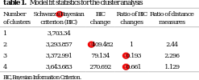

<?xml version="1.0" encoding="UTF-8"?>
<table title="table1" id="table1" class="tabcontent" xmlns="http://www.w3.org/1999/xhtml">
 <tr>
  <td>
   
   <p>corpus-oa-validation/10.1038_pr.2016.185/tables/table1/table.svg.png</p>
  </td>
  <td>
   <table class="table">
    <caption/>
    <tr>
     <th/>
     <th class="cell">Number of clusters </th>
     <th class="cell">Schwarz❾ char: 8217; name: null; f: MyriadPro-Regular; fn: IYAAHI+MyriadPro-Regular; e: WinAnsi s Bayesian criterion (BIC) </th>
     <th class="cell">BIC change </th>
     <th class="cell">Ratio of BIC Ratio of distance changes measures </th>
    </tr>
    <tr>
     <td class="cell">1</td>
     <td class="cell">3,703.34</td>
     <td class="empty"/>
     <td class="empty"/>
     <td class="empty"/>
    </tr>
    <tr>
     <td class="cell">2</td>
     <td class="cell">3,293.857</td>
     <td class="cell">char: 8722; name: null; f: MyriadPro-Regular; fn: IYAAHI+MyriadPro-Regular; e: WinAnsi 409.482</td>
     <td class="cell">1</td>
     <td class="cell">2.44</td>
    </tr>
    <tr>
     <td class="cell">3</td>
     <td class="cell">3,372.991</td>
     <td class="cell">79.134</td>
     <td class="cell">char: 8722; name: null; f: MyriadPro-Regular; fn: IYAAHI+MyriadPro-Regular; e: WinAnsi 0.193</td>
     <td class="cell">2.296</td>
    </tr>
    <tr>
     <td class="cell">4</td>
     <td class="cell">3,643.683</td>
     <td class="cell">270.692</td>
     <td class="cell">char: 8722; name: null; f: MyriadPro-Regular; fn: IYAAHI+MyriadPro-Regular; e: WinAnsi 0.661</td>
     <td class="cell">1.129</td>
    </tr>
   </table>
   <p>corpus-oa-validation/10.1038_pr.2016.185/tables/table1/table.svg.html</p>
  </td>
 </tr>
</table>
